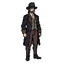
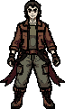
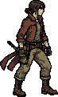
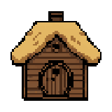
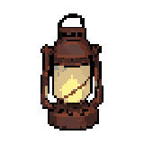
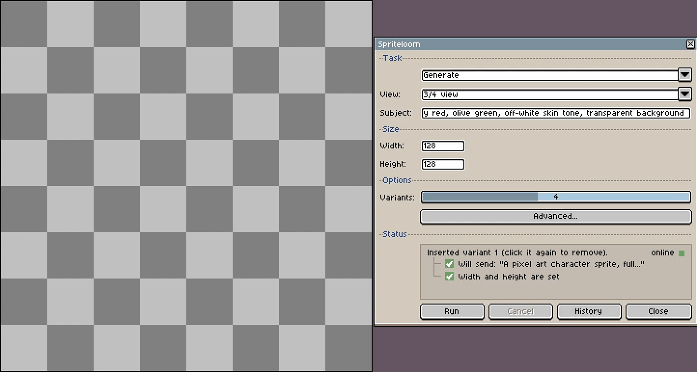
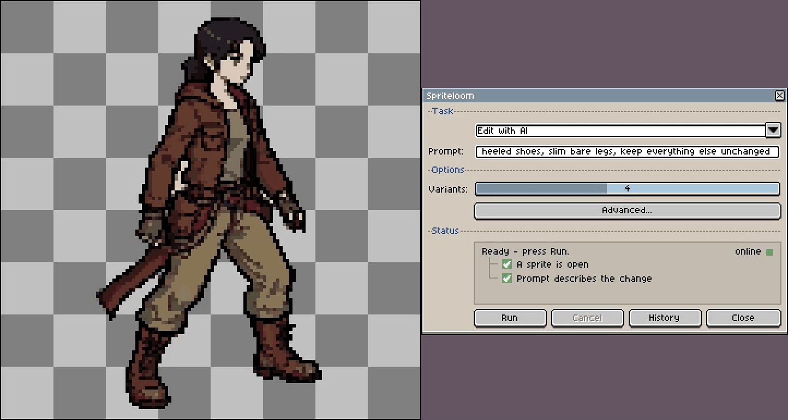
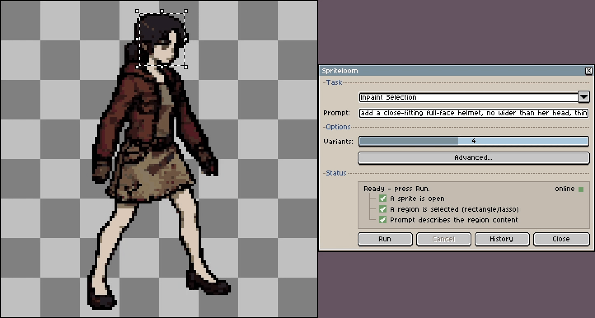
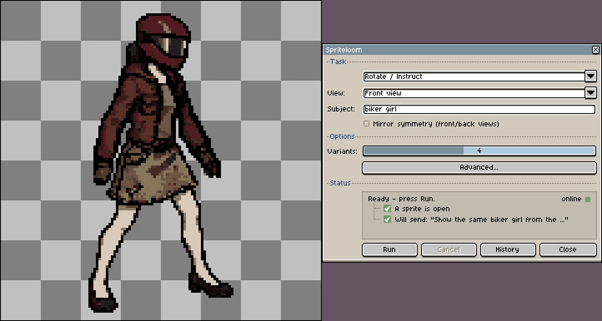
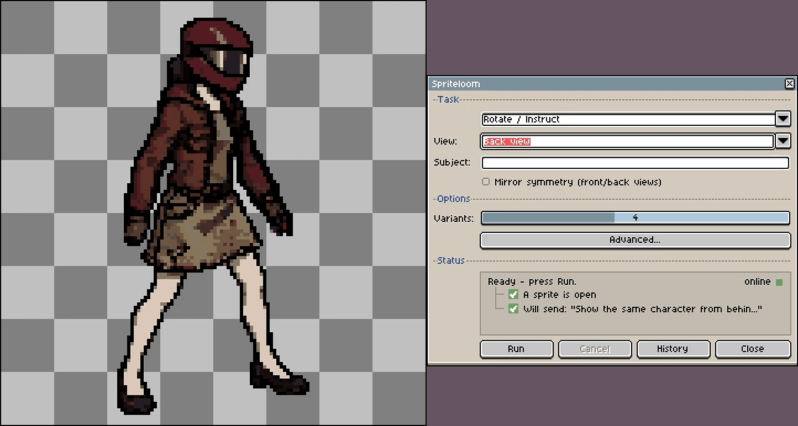

<title>Spriteloom, local AI pixel art assistant for Aseprite</title>
<link rel="icon" href="data:image/svg+xml,<svg xmlns='http://www.w3.org/2000/svg' viewBox='0 0 16 16'><rect x='3' width='4' height='16' fill='%23f2b23c'/><rect x='9' width='4' height='16' fill='%23f2b23c'/><rect y='3' width='16' height='4' fill='%23e8705a'/><rect y='9' width='16' height='4' fill='%23e8705a'/><rect x='3' y='3' width='4' height='4' fill='%23f2b23c'/><rect x='9' y='9' width='4' height='4' fill='%23f2b23c'/></svg>">
<style>
  :root {
    --bg: #14161c;
    --bg-2: #1c1f28;
    --panel: #20242f;
    --line: #2c313d;
    --ink: #d3d7e0;
    --ink-dim: #8b93a5;
    --ink-faint: #616a7d;
    --gold: #f2b23c;
    --gold-deep: #d8951f;
    --danger: #e8705a;
    --check-a: #232733;
    --check-b: #1a1d26;
    --mono: ui-monospace, "Cascadia Code", "SFMono-Regular", Consolas, "Liberation Mono", monospace;
    --sans: system-ui, -apple-system, "Segoe UI", Roboto, Helvetica, Arial, sans-serif;
    --maxw: 1080px;
  }
  :root[data-theme="dark"] {
    --bg: #14161c; --bg-2: #1c1f28; --panel: #20242f; --line: #2c313d;
    --ink: #d3d7e0; --ink-dim: #8b93a5; --ink-faint: #616a7d;
    --gold: #f2b23c; --gold-deep: #d8951f; --danger: #e8705a;
    --check-a: #232733; --check-b: #1a1d26;
  }
  :root[data-theme="light"] {
    --bg: #ece7dc; --bg-2: #e2dccd; --panel: #f4f0e6; --line: #d3ccba;
    --ink: #2a2822; --ink-dim: #6a6555; --ink-faint: #8c8674;
    --gold: #b9791a; --gold-deep: #9c6410; --danger: #b23c28;
    --check-a: #d9d3c4; --check-b: #e6e0d2;
  }

  * { box-sizing: border-box; }
  html { scroll-behavior: smooth; }
  body {
    margin: 0;
    background: var(--bg);
    color: var(--ink);
    font-family: var(--sans);
    line-height: 1.6;
    -webkit-font-smoothing: antialiased;
  }
  img, iframe { max-width: 100%; }
  a { color: var(--gold); text-decoration: none; }
  a:hover { text-decoration: underline; }
  :focus-visible { outline: 2px solid var(--gold); outline-offset: 3px; border-radius: 2px; }

  .wrap { max-width: var(--maxw); margin: 0 auto; padding: 0 24px; }

  .eyebrow {
    font-family: var(--mono);
    font-size: 12px;
    letter-spacing: 0.18em;
    text-transform: uppercase;
    color: var(--gold);
  }

  /* ---- top bar ---- */
  header.bar {
    position: sticky; top: 0; z-index: 10;
    background: color-mix(in srgb, var(--bg) 88%, transparent);
    backdrop-filter: blur(8px);
    border-bottom: 1px solid var(--line);
  }
  .bar .wrap { display: flex; align-items: center; justify-content: space-between; height: 74px; }
  .brand { display: flex; align-items: center; gap: 13px; font-family: var(--mono); font-weight: 700; font-size: 21px; letter-spacing: 0.02em; }
  .brand .dot { width: 30px; height: 30px; background: url("data:image/svg+xml,<svg xmlns='http://www.w3.org/2000/svg' viewBox='0 0 16 16'><rect x='3' width='4' height='16' fill='%23f2b23c'/><rect x='9' width='4' height='16' fill='%23f2b23c'/><rect y='3' width='16' height='4' fill='%23e8705a'/><rect y='9' width='16' height='4' fill='%23e8705a'/><rect x='3' y='3' width='4' height='4' fill='%23f2b23c'/><rect x='9' y='9' width='4' height='4' fill='%23f2b23c'/></svg>") center/contain no-repeat; }
  .bar nav { display: flex; align-items: center; gap: 22px; font-size: 14px; }
  .bar nav a { color: var(--ink-dim); }
  .bar nav a:hover { color: var(--ink); text-decoration: none; }
  .ghbtn { color: var(--ink) !important; border: 1px solid var(--line); padding: 8px 15px; border-radius: 6px; font-family: var(--mono); font-size: 13px; margin-left: 14px; }
  .ghbtn:hover { border-color: var(--gold); text-decoration: none; }
  .dlbtn {
    color: #17130a !important; background: var(--gold); border: 1px solid var(--gold);
    padding: 8px 17px; border-radius: 6px; font-family: var(--mono); font-size: 13px; font-weight: 700;
  }
  .dlbtn:hover { background: var(--gold-deep); border-color: var(--gold-deep); text-decoration: none; }
  @media (max-width: 640px) { .bar nav .navlink { display: none; } }

  /* ---- hero ---- */
  .hero { padding: 80px 0 40px; }
  .hero h1 {
    font-size: clamp(40px, 7vw, 76px);
    line-height: 1.02;
    letter-spacing: 0.012em;
    margin: 18px 0 0;
    text-wrap: balance;
    font-weight: 800;
  }
  .hero h1 .fg { color: var(--gold); }
  .hero .lede {
    max-width: 60ch;
    font-size: clamp(17px, 2.2vw, 20px);
    color: var(--ink-dim);
    margin: 22px 0 0;
  }
  .hero .cta { display: flex; flex-wrap: wrap; gap: 14px; margin-top: 32px; }
  .btn {
    font-family: var(--mono); font-size: 15px; font-weight: 600;
    padding: 13px 22px; border-radius: 8px; border: 1px solid transparent;
    display: inline-flex; align-items: center; gap: 9px;
  }
  .btn.primary { background: var(--gold); color: #17130a; }
  .btn.primary:hover { background: var(--gold-deep); text-decoration: none; }
  .btn.secondary { border-color: var(--line); color: var(--ink); }
  .btn.secondary:hover { border-color: var(--gold); text-decoration: none; }
  .badges { margin-top: 22px; display: flex; flex-wrap: wrap; gap: 8px 18px; font-family: var(--mono); font-size: 12.5px; color: var(--ink-faint); }
  .badges span::before { content: "▚ "; color: var(--gold); }
  .getbox { margin-top: 36px; scroll-margin-top: 90px; }
  .getbox iframe { display: block; }

  /* ---- checkerboard gallery ---- */
  .stage {
    margin-top: 62px;
    border: 1px solid var(--line);
    border-radius: 14px;
    overflow: hidden;
    background: var(--panel);
  }
  .stage-head {
    display: flex; align-items: center; gap: 8px;
    padding: 12px 16px; border-bottom: 1px solid var(--line);
    font-family: var(--mono); font-size: 12px; color: var(--ink-faint);
  }
  .stage-head .tl { width: 11px; height: 11px; border-radius: 50%; background: var(--line); }
  .stage-head .tl:nth-child(1){ background:#e8705a; } .stage-head .tl:nth-child(2){ background:#e6b34a; } .stage-head .tl:nth-child(3){ background:#6bbf7a; }
  .stage-head .title { margin-left: 8px; }
  .grid {
    display: grid;
    grid-template-columns: repeat(3, 1fr);
    background-image:
      linear-gradient(45deg, var(--check-a) 25%, transparent 25%, transparent 75%, var(--check-a) 75%),
      linear-gradient(45deg, var(--check-a) 25%, var(--check-b) 25%, var(--check-b) 75%, var(--check-a) 75%);
    background-size: 16px 16px;
    background-position: 0 0, 8px 8px;
    background-color: var(--check-b);
  }
  @media (max-width: 820px) { .grid { grid-template-columns: repeat(3, 1fr); } }
  @media (max-width: 420px) { .grid { grid-template-columns: repeat(2, 1fr); } }
  .cell {
    display: flex; flex-direction: column;
    align-items: center; justify-content: center; gap: 10px;
    padding: 12px; position: relative; min-width: 0;
    border-right: 1px solid color-mix(in srgb, var(--line) 55%, transparent);
    border-bottom: 1px solid color-mix(in srgb, var(--line) 55%, transparent);
  }
  .cell img {
    image-rendering: pixelated;
    width: 250px; height: 250px; max-width: 100%; object-fit: contain;
    transition: transform .18s ease;
  }
  .cell:hover img { transform: translateY(-4px) scale(1.06); }
  .cell .tag {
    font-family: var(--mono); font-size: 12px; line-height: 1.45;
    color: var(--ink-dim); text-align: center; max-width: 100%;
  }
  .cell .tag summary { cursor: pointer; color: var(--gold); font-size: 12px; list-style: none; }
  .cell .tag summary::-webkit-details-marker { display: none; }
  .cell .tag summary::marker { content: ""; }
  .cell .tag p {
    position: absolute; left: 10px; right: 10px; bottom: 44px; margin: 0; z-index: 5;
    text-align: left; background: var(--panel); border: 1px solid var(--line);
    border-radius: 8px; padding: 10px 12px; box-shadow: 0 10px 26px rgba(0,0,0,.45);
  }
  .cell .tag .seed { display: block; margin-top: 6px; color: var(--ink-faint); font-size: 11px; }
  @media (prefers-reduced-motion: reduce) {
    .cell img { transition: none; } .cell:hover img { transform: none; } .cell .tag { transition: none; }
  }

  /* ---- sections ---- */
  section { padding: 72px 0; border-top: 1px solid var(--line); }
  .section-title { font-size: clamp(26px, 4vw, 36px); letter-spacing: -0.01em; margin: 10px 0 0; font-weight: 800; text-wrap: balance; }
  .section-sub { color: var(--ink-dim); max-width: 62ch; margin: 14px 0 0; }

  .tasks { display: grid; grid-template-columns: repeat(2, 1fr); gap: 16px; margin-top: 40px; }
  @media (max-width: 720px){ .tasks { grid-template-columns: 1fr; } }
  .task {
    background: var(--bg-2); border: 1px solid var(--line); border-radius: 12px;
    padding: 24px;
  }
  .task h3 { margin: 0; font-family: var(--mono); font-size: 16px; color: var(--gold); }
  .task p { margin: 10px 0 0; color: var(--ink-dim); font-size: 15px; }
  .task .ex { margin-top: 14px; font-family: var(--mono); font-size: 12.5px; color: var(--ink-faint); border-left: 2px solid var(--line); padding-left: 12px; }

  /* ---- task demo clips ---- */
  /* column ratio keeps the tall clip level with the two stacked ones, as in the README */
  .demos { margin-top: 40px; display: grid; grid-template-columns: 2.068fr 1fr; gap: 12px; }
  .demos .tall { grid-row: span 2; }
  .demos img {
    display: block; width: 100%; border: 1px solid var(--line); border-radius: 8px;
  }
  .demo-pair { margin-top: 12px; display: grid; grid-template-columns: 1fr 1fr; gap: 12px; }
  .demo-cap {
    margin: 14px 0 0; text-align: center;
    font-family: var(--mono); font-size: 13px; color: var(--ink-faint);
  }
  @media (max-width: 760px) {
    .demos, .demo-pair { grid-template-columns: 1fr; }
    .demos .tall { grid-row: auto; }
  }

  /* ---- prompt recipe ---- */
  .recipe { margin-top: 34px; display: flex; flex-wrap: wrap; align-items: center; gap: 10px; }
  .recipe .chip { font-family: var(--mono); font-size: 13px; padding: 8px 14px; border-radius: 8px; background: var(--bg-2); border: 1px solid var(--line); color: var(--ink); }
  .recipe .plus { color: var(--gold); font-family: var(--mono); font-weight: 700; }

  /* ---- how it works pipeline ---- */
  .pipe {
    margin-top: 40px; display: grid; grid-template-columns: 1fr auto 1fr auto 1fr; align-items: stretch; gap: 14px;
  }
  @media (max-width: 760px){ .pipe { grid-template-columns: 1fr; } .pipe .arrow { display: none; } }
  .node {
    background: var(--bg-2); border: 1px solid var(--line); border-radius: 12px; padding: 20px;
  }
  .node .k { font-family: var(--mono); font-size: 12px; letter-spacing: .08em; text-transform: uppercase; color: var(--gold); }
  .node .v { margin-top: 8px; font-weight: 700; }
  .node .d { margin-top: 6px; font-size: 13.5px; color: var(--ink-dim); }
  .arrow { display: flex; align-items: center; justify-content: center; color: var(--ink-faint); font-family: var(--mono); }

  /* ---- requirements spec sheet ---- */
  .spec { margin-top: 36px; border: 1px solid var(--line); border-radius: 12px; overflow: hidden; background: var(--bg-2); }
  .spec .row { display: grid; grid-template-columns: 200px 1fr; gap: 0; border-top: 1px solid var(--line); }
  .spec .row:first-child { border-top: 0; }
  .spec .k { padding: 15px 20px; font-family: var(--mono); font-size: 13px; letter-spacing: .06em; text-transform: uppercase; color: var(--ink-faint); background: color-mix(in srgb, var(--bg) 40%, transparent); }
  .spec .v { padding: 15px 20px; font-size: 15px; }
  @media (max-width: 560px){ .spec .row { grid-template-columns: 1fr; } .spec .v { padding-top: 0; } }
  .spec .v strong { color: var(--gold); }
  .warn {
    margin-top: 22px; border-left: 3px solid var(--danger);
    background: color-mix(in srgb, var(--danger) 10%, transparent);
    padding: 14px 18px; border-radius: 0 8px 8px 0; font-size: 15px; color: var(--ink);
  }

  /* ---- install steps ---- */
  .steps { margin-top: 36px; display: grid; gap: 14px; counter-reset: s; }
  .step { display: grid; grid-template-columns: 40px 1fr; gap: 16px; align-items: start; }
  .step .n {
    counter-increment: s; width: 36px; height: 36px; border-radius: 8px;
    display: grid; place-items: center; font-family: var(--mono); font-weight: 700;
    background: var(--bg-2); border: 1px solid var(--line); color: var(--gold);
  }
  .step .n::before { content: counter(s); }
  .step code, code.inline {
    font-family: var(--mono); font-size: 13.5px;
    background: var(--bg-2); border: 1px solid var(--line);
    padding: 2px 7px; border-radius: 5px; color: var(--ink);
  }
  .step .body { padding-top: 6px; }
  .step .body p { margin: 0; color: var(--ink-dim); }

  /* ---- final cta ---- */
  .final { text-align: center; }
  .final h2 { font-size: clamp(28px, 5vw, 44px); font-weight: 800; letter-spacing: -0.01em; margin: 0; }
  .final p { color: var(--ink-dim); margin: 16px auto 0; max-width: 52ch; }
  .final .cta { display: flex; flex-wrap: wrap; gap: 14px; justify-content: center; margin-top: 32px; }

  footer { border-top: 1px solid var(--line); padding: 34px 0 60px; color: var(--ink-faint); font-size: 13.5px; }
  footer .wrap { display: flex; flex-wrap: wrap; justify-content: space-between; gap: 12px; align-items: center; }
  footer .mono { font-family: var(--mono); }
</style>

<header class="bar">
  <div class="wrap">
    <div class="brand"><span class="dot"></span> Spriteloom</div>
    <nav>
      <a class="navlink" href="#tasks">What it does</a>
      <a class="navlink" href="#how">How it works</a>
      <a class="navlink" href="#req">Requirements</a>
      <a class="ghbtn" href="https://github.com/vkarach/spriteloom">GitHub ↗</a>
      <a class="dlbtn js-get" href="https://vkarach.itch.io/spriteloom/purchase?popup=1">Download</a>
    </nav>
  </div>
</header>

<main>
  <section class="hero" style="border-top:0;">
    <div class="wrap">
      <div class="eyebrow">Local · GPU only · No subscription</div>
      <h1>Pixel art sprites, generated <span class="fg">inside Aseprite.</span></h1>
      <p class="lede">
        Spriteloom runs a diffusion model on your own GPU and wires it straight
        into Aseprite. Type a prompt, get a sprite; describe an edit, get a
        variant dropped in as a new layer. Nothing leaves your machine, and
        your existing pixels are never touched.
      </p>
      <div class="cta">
        <a class="btn primary js-get" href="https://vkarach.itch.io/spriteloom/purchase?popup=1">Download</a>
        <a class="btn secondary" href="#how">See how it works</a>
      </div>
      <div class="badges">
        <span>Runs fully offline</span>
        <span>One resident model, no swaps</span>
        <span>Apache 2.0 licensed</span>
      </div>

      <div class="getbox" id="get">
        <iframe frameborder="0" src="https://itch.io/embed/4811635?bg_color=20242f&amp;fg_color=d3d7e0&amp;link_color=f2b23c&amp;border_color=2c313d" width="770" height="176"><a href="https://vkarach.itch.io/spriteloom">Spriteloom by vkarach</a></iframe>
      </div>

      <div class="stage">
        <div class="stage-head">
          <span class="tl"></span><span class="tl"></span><span class="tl"></span>
          <span class="title">made with Spriteloom, hover any sprite for its prompt</span>
        </div>
        <div class="grid">
          <div class="cell"><details class="tag"><summary>see prompt</summary><p>A tall man in classic costume in classic three-quarter view game perspective, seen from slightly above.<span class="seed">seed 829855608</span></p></details></div>
          <div class="cell"><details class="tag"><summary>see prompt</summary><p>Show the same character from the front, seen head-on (edit of a prior character)<span class="seed">seed 2574489800</span></p></details></div>
          <div class="cell"><details class="tag"><summary>see prompt</summary><p>pixel art character sprite, side-view full body, young human woman, lean athletic build, weathered explorer, short dark hair tied back, leather jacket over a grey undershirt, worn canvas trousers tucked into scuffed boots, wide belt with pouches and a coiled rope, long dark red scarf trailing behind, fingerless gloves, short curved sword sheathed at the hip, alert forward-leaning stance, limited palette of muted browns, dusty red, olive green, off-white skin tones, dark outline, clean readable silhouette, side profile, transparent background<span class="seed">seed 3350658901</span></p></details></div>
          <div class="cell"><details class="tag"><summary>see prompt</summary><p>A House, seen exactly from the side at eye level, in strict profile view: only its side silhouette is visible, the front face cannot be seen at all. A flat 2D side-scroller game object. The camera does not look down at it.<span class="seed">seed 2162032872</span></p></details></div>
          <div class="cell"><details class="tag"><summary>see prompt</summary><p>A a rusty iron lantern with a warm yellow flame inside in classic three-quarter view game perspective, seen from slightly above.<span class="seed">seed 1450310675</span></p></details></div>
          <div class="cell"><details class="tag"><summary>see prompt</summary><p>A single gold coin with an embossed crown, shiny in classic three-quarter view game perspective, seen from slightly above.<span class="seed">seed 2231528890</span></p></details></div>
        </div>
      </div>
      <p style="margin-top:14px; font-size:13px; color:var(--ink-faint); font-family:var(--mono);">
        Real output from the tool, one generation each. Shown scaled up with hard pixel edges to keep them crisp.
      </p>
    </div>
  </section>

  <section id="tasks">
    <div class="wrap">
      <div class="eyebrow">Four tasks, one panel</div>
      <h2 class="section-title">You stay in the editor the whole time</h2>
      <p class="section-sub">
        Every task opens results in a side window; click a variant to insert it
        as a new layer. It never modifies the pixels you already drew.
      </p>
      <div class="tasks">
        <div class="task">
          <h3>Generate</h3>
          <p>A sprite from a text prompt. Pick a view preset, name the subject, add extra detail, and the panel shows the exact text it will send.</p>
          <div class="ex">"closed book with dark brown leather cover"</div>
        </div>
        <div class="task">
          <h3>Edit with AI</h3>
          <p>Change an existing sprite by instruction, not a strength slider. Style and everything you didn't mention stays put.</p>
          <div class="ex">"make the sword glow slightly blue"</div>
        </div>
        <div class="task">
          <h3>Inpaint Selection</h3>
          <p>Same as Edit, but only ever touches the region you selected. The rest of the sprite is guaranteed untouched.</p>
          <div class="ex">"replace the wheels with skis"</div>
        </div>
        <div class="task">
          <h3>Rotate and Instruct</h3>
          <p>See the same subject from another angle. Name the subject explicitly and enable mirror symmetry for clean front and back views.</p>
          <div class="ex">"show the same character from behind"</div>
        </div>
      </div>

      <div class="demos">
        
        
        
      </div>
      <p class="demo-cap">Generate &middot; Edit with AI &middot; Inpaint</p>

      <div class="demo-pair">
        
        
      </div>
      <p class="demo-cap">Rotate / Instruct, two different turnarounds. All clips sped up.</p>
    </div>
  </section>

  <section id="prompts">
    <div class="wrap">
      <div class="eyebrow">Prompting</div>
      <h2 class="section-title">A good sprite starts with a concrete subject</h2>
      <p class="section-sub">
        You don't write a paragraph. You name the <strong>subject</strong> the
        way you'd describe it to another artist, pick a <strong>view</strong>,
        and drop refinements in the <strong>extra</strong> field. The panel wraps
        that into the exact camera and framing text the model reads. "a bear"
        works; "a bear" with detail works far better.
      </p>

      <div class="recipe">
        <span class="chip">subject</span>
        <span class="plus">+</span>
        <span class="chip">material &amp; colour</span>
        <span class="plus">+</span>
        <span class="chip">one defining detail</span>
      </div>

      <div class="tasks">
        <div class="task">
          <h3>3/4 view</h3>
          <p>Props and objects. Read as a game asset from slightly above.</p>
          <div class="ex">"a wooden treasure chest with iron bands and a brass lock, lid closed"</div>
        </div>
        <div class="task">
          <h3>Side view</h3>
          <p>Creatures and characters for a side scroller. Name the silhouette.</p>
          <div class="ex">"a four legged brown horse with a black mane, standing"</div>
        </div>
        <div class="task">
          <h3>Front view</h3>
          <p>Buildings, gates, symmetrical structures seen head on.</p>
          <div class="ex">"a grey stone castle gate with two towers and a raised portcullis"</div>
        </div>
        <div class="task">
          <h3>Top down</h3>
          <p>Tiles and furniture for an overhead map.</p>
          <div class="ex">"a round wooden table with a red cloth, a lit candle, and two plates"</div>
        </div>
      </div>

      <div class="spec" style="margin-top:24px;">
        <div class="row"><div class="k" style="color:var(--danger);">Too vague</div><div class="v">"a monster" · "a character" · "a building"</div></div>
        <div class="row"><div class="k" style="color:var(--gold);">Concrete</div><div class="v">"a horned red demon with leathery bat wings, standing on two legs"</div></div>
      </div>

      <p class="section-sub" style="margin-top:22px;">
        Two more levers: put palette and mood in <strong>extra</strong> ("muted
        earth tones", "limited eight colour palette"), and for Rotate keep the
        same subject wording so the character stays itself across angles.
      </p>
    </div>
  </section>

  <section id="how">
    <div class="wrap">
      <div class="eyebrow">Architecture</div>
      <h2 class="section-title">How it works</h2>
      <p class="section-sub">
        A Lua extension in Aseprite talks over WebSocket to a local Python
        server that keeps one model warm on the GPU. After the first warm
        up there are no model swaps, so tasks on 12+ GB cards respond in
        seconds — 8&nbsp;GB cards (Legacy 8&nbsp;GB mode) take longer per task.
      </p>
      <div class="pipe">
        <div class="node">
          <div class="k">Aseprite · Lua</div>
          <div class="v">The plugin</div>
          <div class="d">Control panel, results & history windows, frame/mask export, layer insertion.</div>
        </div>
        <div class="arrow">→</div>
        <div class="node">
          <div class="k">Python · WebSocket</div>
          <div class="v">The server</div>
          <div class="d">Validates the request at the boundary, streams progress, postprocesses raw output into a clean sprite.</div>
        </div>
        <div class="arrow">→</div>
        <div class="node">
          <div class="k">FLUX.2 Klein · GPU</div>
          <div class="v">The model</div>
          <div class="d">One 4B parameter pipeline, warmed up once. First load downloads ~15&nbsp;GB; on 12+ GB cards it then stays fully resident, on 8&nbsp;GB cards (Legacy 8&nbsp;GB mode) it streams layer-by-layer per task instead.</div>
        </div>
      </div>
    </div>
  </section>

  <section id="req">
    <div class="wrap">
      <div class="eyebrow">Before you download</div>
      <h2 class="section-title">This runs a real model on your hardware</h2>
      <p class="section-sub">
        Spriteloom is deliberately local: no cloud, no CPU fallback. That
        buys you privacy and zero subscription, at the cost of needing a
        capable GPU. Check the spec before you install.
      </p>
      <div class="spec">
        <div class="row"><div class="k">GPU</div><div class="v"><strong>NVIDIA, 12+ GB VRAM</strong> · developed on an RTX 5080; 8&nbsp;GB cards work in Legacy 8&nbsp;GB mode</div></div>
        <div class="row"><div class="k">OS</div><div class="v">Windows</div></div>
        <div class="row"><div class="k">Python</div><div class="v">3.11 or newer</div></div>
        <div class="row"><div class="k">Aseprite</div><div class="v">1.3 or newer</div></div>
        <div class="row"><div class="k">Disk</div><div class="v">~15 GB for the model, downloaded on first run</div></div>
      </div>
      <div class="warn">
        No NVIDIA GPU, no Spriteloom. There is no cloud option by design.
        If that's a dealbreaker, this tool isn't for you, and that's fine.
      </div>
      <p class="section-sub" style="margin-top:20px">
        <strong>Legacy 8&nbsp;GB mode</strong> (e.g. a laptop RTX 4060): the
        ~8&nbsp;GB transformer doesn't fit on the GPU whole, so it swaps one
        layer onto the GPU at a time, out to system RAM the rest of the run.
        Same output as the 12+ GB path, just much slower per image. VRAM and
        GPU usage both stay low the whole time; the constant PCIe transfer,
        not compute, is what makes it slow.
      </p>
    </div>
  </section>

  <section>
    <div class="wrap">
      <div class="eyebrow">Setup</div>
      <h2 class="section-title">Four commands and a restart</h2>
      <div class="steps">
        <div class="step"><div class="n"></div><div class="body"><p>Create a virtual environment: <code>py -3 -m venv .venv</code></p></div></div>
        <div class="step"><div class="n"></div><div class="body"><p>Install server deps: <code>.venv\Scripts\python -m pip install -r server\requirements.txt</code></p></div></div>
        <div class="step"><div class="n"></div><div class="body"><p>Install CUDA Torch: <code>pip install torch --index-url https://download.pytorch.org/whl/cu128</code></p></div></div>
        <div class="step"><div class="n"></div><div class="body"><p>Run <code class="inline">install-plugin.bat</code>, restart Aseprite, then start the server and open <strong>Sprite → Spriteloom</strong>.</p></div></div>
      </div>
    </div>
  </section>

  <section class="final">
    <div class="wrap">
      <h2>Weave your first sprite.</h2>
      <p>Free, open source, and entirely yours to run. Grab the build on itch.io; setup and docs live on GitHub.</p>
      <div class="cta">
        <a class="btn primary" href="https://vkarach.itch.io/spriteloom">Download on itch.io ↗</a>
        <a class="btn secondary" href="https://github.com/vkarach/spriteloom">Open the repository ↗</a>
      </div>
    </div>
  </section>
</main>

<footer>
  <div class="wrap">
    <span class="mono">Spriteloom · local AI pixel art assistant for Aseprite</span>
    <span class="mono">Apache 2.0 · built on FLUX.2 Klein</span>
  </div>
</footer>

<script>
  (function () {
    var root = document.documentElement;
    try {
      var t = localStorage.getItem("sf-theme");
      if (t) root.setAttribute("data-theme", t);
    } catch (e) {}
  })();

  // popup geometry matches Itch.attachBuyButton so it looks like the widget's own button
  (function () {
    var box = document.getElementById("get");
    document.querySelectorAll("a.js-get").forEach(function (a) {
      a.addEventListener("click", function (e) {
        e.preventDefault();
        if (box) {
          var r = box.getBoundingClientRect();
          if (r.top < 0 || r.bottom > (window.innerHeight || 0)) {
            window.scrollTo({ top: 0, behavior: "smooth" });
            return;
          }
        }
        var w = 680, h = 400;
        var top = (screen.height - h) / 2, left = (screen.width - w) / 2;
        var win = window.open(a.href, "purchase",
          "scrollbars=1, resizable=no, width=" + w + ", height=" + h +
          ", top=" + top + ", left=" + left);
        if (win && win.focus) win.focus();
      });
    });
  })();
</script>
